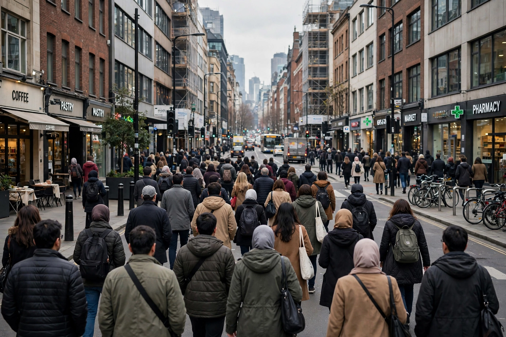

Portal:Society
The Society portal is a gateway to Wikipedia articles about society, culture and human social life.

Introduction
A society is a group of individuals involved in persistent social interaction, sharing a geographical or social territory and typically subject to the same political authority and dominant cultural expectations. Societies are characterised by patterns of relationships — social relations — between individuals who share a distinctive culture and institutions.
Selected articles
Categories
Society · Culture · Communities · Social groups · Social institutions
Related portals: Politics · History · Geography
Back to the Main Page